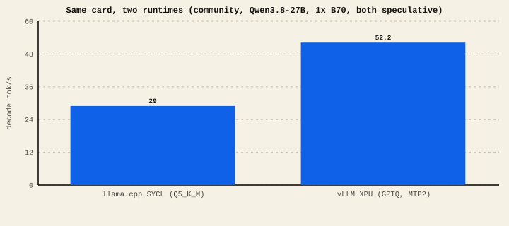

The short version
- llama.cpp (SYCL) — simplest one-card path, GGUF quants, and validated target-only plus model-specific speculative lanes.
- vLLM (XPU) — fastest ceiling, has MTP and multi-card, but heavier and very version-sensitive.
- IPEX-LLM — Intel's PyTorch acceleration layer that other tools (Ollama, portable llama.cpp) build on for Arc.
- The community's own same-card test put vLLM at roughly 1.8× llama.cpp — but at the cost of setup and stability quirks.
The three you'll meet
llama.cpp (SYCL backend)
A single, self-contained engine that runs GGUF-quantized models. On Intel it uses the SYCL backend. It's the easiest to get working and is happy on one card. Several pinned lab lanes are byte-reproducible, which makes them strong quality controls, but determinism still belongs to the exact build and recipe. llama.cpp now has validated Qwen MTP and draft-model lanes too; support is model- and artifact-specific.
vLLM (XPU backend)
A production-grade serving engine. It brings the high-end features: MTP speculative decoding, tensor-parallel across cards, continuous batching (many users share the card at once), FP8 KV. It's how we reach the 100+ tok/s research numbers. The costs are real: it's a bigger install (usually Docker), and it is strongly tied to its exact version — see the warning below.
IPEX-LLM / Intel XPU
"XPU" is Intel's name for its GPU compute target in PyTorch. IPEX-LLM (Intel Extension for PyTorch, LLM) is the acceleration layer many PyTorch-based tools use to run on Arc — it underpins parts of the vLLM XPU path and portable Ollama/llama.cpp builds for Intel. You rarely pick it directly; you pick a tool built on it. We call it out so the "XPU" label in other guides isn't a mystery.
The same-card comparison
A community poster ran both engines on one B70 with Qwen3.8-27B and reported vLLM ~1.8× faster: Community
llama.cpp vs vLLM on one card

Which does what
| llama.cpp SYCL | vLLM XPU | |
|---|---|---|
| Ease of setup | Easiest (one binary) | Heavier (usually Docker) |
| One card | Excellent | Can be rough (see below) |
| Multi-card | Yes; split strategy varies | Tensor-parallel |
| MTP / speculative | Yes on compatible GGUF/draft lanes | Yes on compatible model lanes |
| Determinism | Bit-exact on pinned recipes | Needs care at graph/TP/spec |
| Peak speed | Good | Higher ceiling |
| Quant formats | GGUF (Q4/Q5/Q8…) | INT4 (AutoRound/GPTQ), FP8 |
Our exact pinned nightly build reports 0.26.1rc1.dev1102+ge9d1398d9. Its code is 11 days newer than the 0.27.1 image a community report used — but the two builds sit on different branches, so neither is simply an upgrade of the other and their numbers can't be read as before-and-after. On our nightly, Qwen3.8 runs without a draft on 1, 2, or 4 cards; MTP's verify step is slow on one card, and graph mode plus MTP produces corrupt output. We have not yet re-run the comparison on 0.27.1 locally. Pin the image digest and treat every model, quant, TP, graph, and MTP combination as version-specific. See the Qwen coverage map.
Starting out, on one card: use llama.cpp (SYCL) — or a tool built on it like Ollama. It is the shortest path to the established target-only packages. Chasing a validated vLLM configuration or tensor parallelism: use vLLM (XPU), pin a known-good image, and verify output determinism before trusting the numbers. Many people run both.